Introduction
Diabetic retinopathy causes irreversible blindness by destroying retinal neurons that the adult human retina cannot naturally regenerate. Unlike regenerative species, human Müller glia (MG) remain locked in a non-neurogenic state due to restricted chromatin, inflammation, and a lack of proneural factors such as ASCL1.
We propose a regenerative strategy using mRNA-delivered ASCL1 with epigenetic enhancers to unlock MG plasticity. ASCL1, a pioneer transcription factor, opens chromatin, represses glial identity, and activates neurogenic programs — aiming to reprogram MG into neuron-producing cells to restore vision lost in diabetic retinopathy.
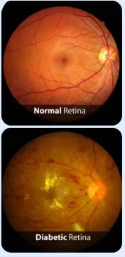
Prevalence
As diabetes surges worldwide, DR increasingly drives permanent vision loss. This burden underscores an urgent scientific imperative: to move beyond disease management toward regenerative strategies capable of replacing the retinal neurons destroyed by diabetic neurodegeneration.
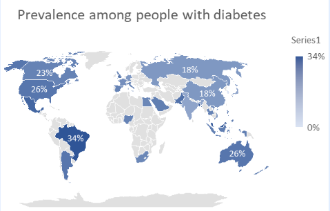
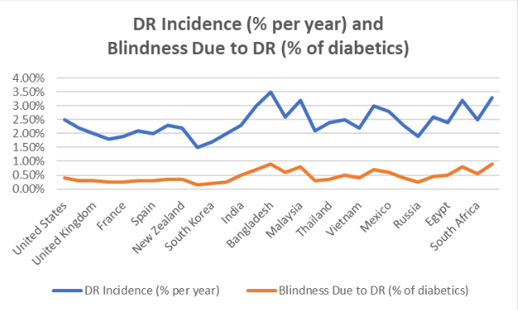
Müller Cell Reversion
Müller glia, the retina's central support cells, typically enter reactive gliosis in diabetic retinopathy, showing GFAP elevation, STAT3 activation, and tightly closed chromatin at neurogenic loci. This rigid glial state blocks their ability to re-enter a progenitor phase or regenerate lost neurons.
1 · Unlock
ASCL1, a master proneural factor, is combined with epigenetic priming (HDAC inhibitors or TET activators) to open chromatin.
2 · De-differentiate
Glial identity is suppressed and progenitor markers such as SOX2, Pax6, and Lhx2 are restored, producing retinal progenitor-like cells.
3 · Re-specify
Guided by regulators such as CRX, OTX2, and NRL, progenitor-like cells adopt photoreceptor fate to regenerate functional photoreceptors.
Mechanistic Pathway of Müller Glia Reprogramming
Chronic hyperglycemia drives ROS overload, mitochondrial dysfunction, lipid peroxidation, and photoreceptor apoptosis, pushing Müller glia into reactive gliosis. Nanoparticle-delivered ASCL1 plus epigenetic priming then reprograms these glia toward new photoreceptors that mature and integrate into retinal circuitry.
Click the diagram to open it full size.
Key Research Studies Supporting This Approach
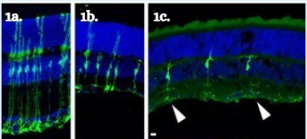
Neuron-like morphology after ASCL1 + injury + TSA
(1a) Control Müller glia show normal radial glial morphology. (1b) ASCL1-expressing Müller glia stay predominantly glial with minimal change. (1c) ASCL1 + injury + TSA treatment gives neuron-like morphology with extended processes.
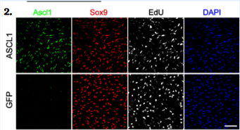
ASCL1-infected MG express Sox9 and incorporate EdU
ASCL1-infected P12 Müller glia express Sox9, incorporate EdU, and express Ascl1 protein at 4 dpi. GFP-infected control cells do not express Ascl1. Scale bar: 100 µm.
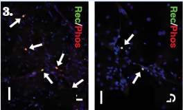
Conversion toward a photoreceptor phenotype
Recoverin/Phosducin co-immunolabeling (arrows) demonstrates Müller-glia conversion toward a photoreceptor phenotype, with enhanced photoreceptor formation under reprogramming conditions compared with control.
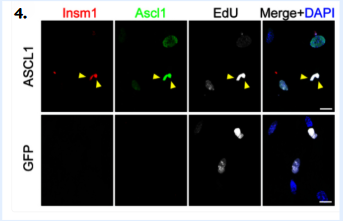
ASCL1⁺EdU⁺ MG express the progenitor marker Insm1
At 4 dpi, ASCL1-infected ASCL1⁺EdU⁺ Müller glia express Insm1 (arrowheads mark triple-labeled cells). Data are mean ± s.e.m.; Student's t-test; scale bars 100 µm (A) and 20 µm (C).
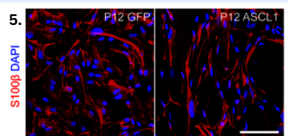
Reduced glial protein S100β after ASCL1
S100β (red, glial marker) is reduced in ASCL1-treated cells (right) compared with the GFP control (left); DAPI (blue) marks nuclei.
Six-Step Delivery and Reprogramming Strategy
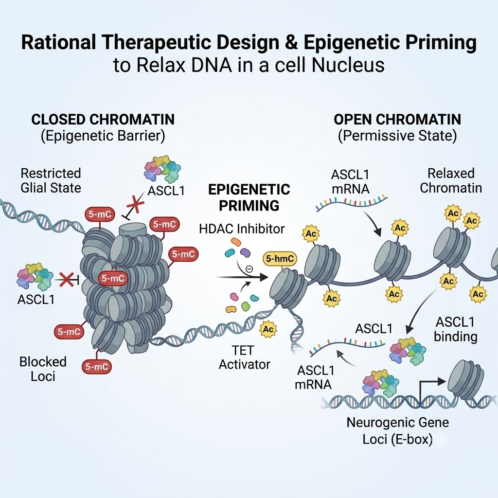
ASCL1-modRNA with epigenetic design
Optimized 5′ cap and UTRs with N1-methylpseudouridine-modified nucleosides; transient HDACi/TET activation opens chromatin. Expression window: 3–7 days.
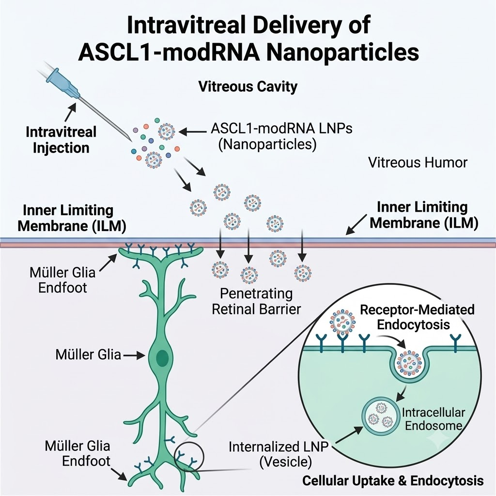
Engineered LNPs for targeted delivery
80–120 nm PEG-stabilized ionizable-lipid LNPs with MG-targeting ligands, produced under GMP with QC assays.
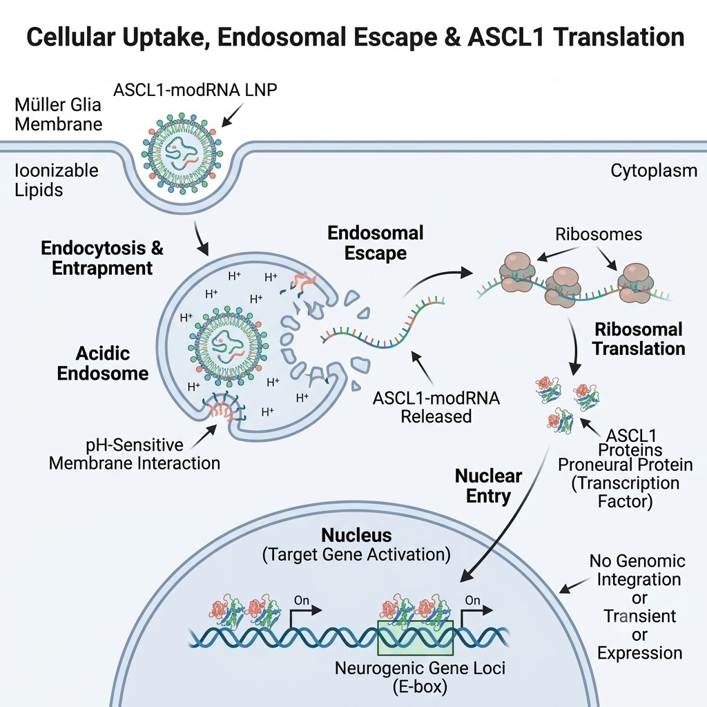
Intravitreal administration
Pars plana injection (50–100 µL human equivalent), with passive vitreous diffusion and an optional hydrogel depot for sustained release.
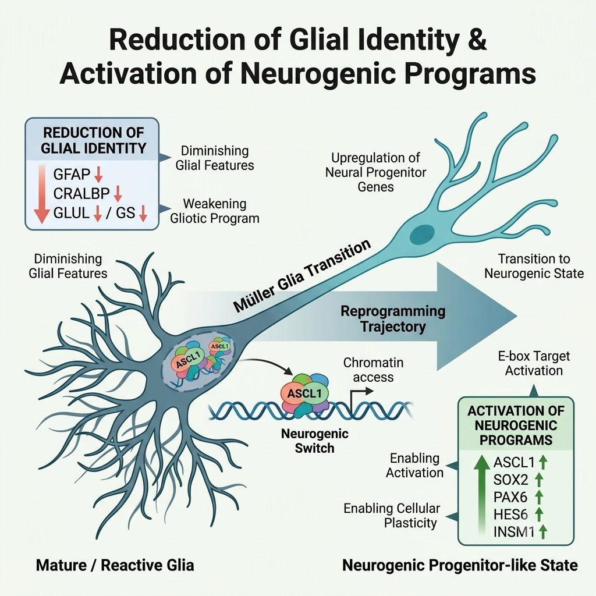
Diffusion across retinal barriers
Vitreous navigation and inner limiting membrane (ILM) penetration, aided by PEGylation and near-neutral charge, toward Müller-glia endfeet.
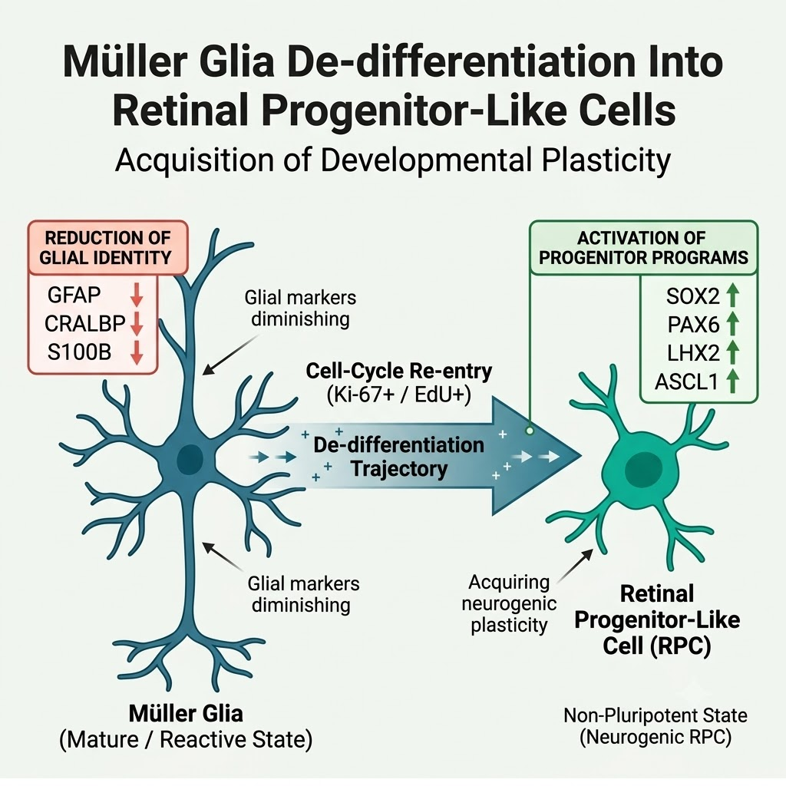
Uptake and ASCL1 translation
Receptor-mediated endocytosis, endosomal escape of ionizable lipids, then ASCL1 translation (about 24–72 h) represses glial genes and activates neurogenic genes.
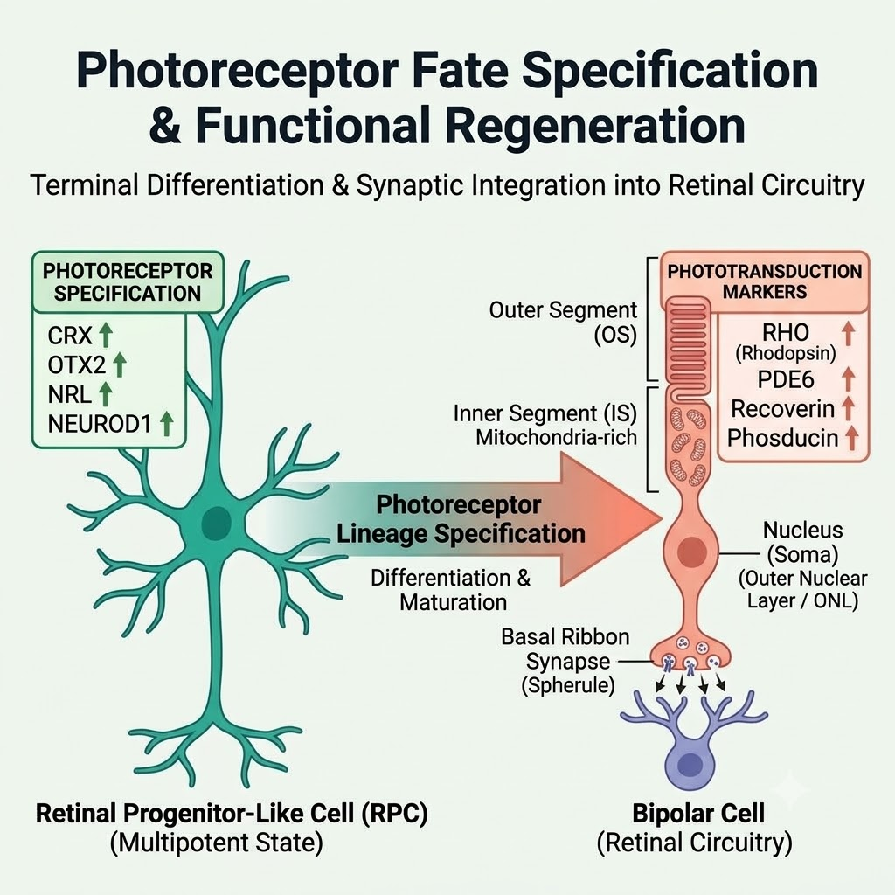
Photoreceptor regeneration begins
Progenitor markers rise in week 1, a CRX modRNA pulse induces photoreceptor identity in weeks 2–4, with maturation over 1–3 months and continuous safety monitoring.
Results & Discussion
- mRNA-delivered ASCL1 enables precise, transient expression without genomic integration.
- ASCL1 acts as a pioneer transcription factor, binding E-box motifs in closed chromatin.
- Reactivates dormant neurogenic programs and induces progenitor regulators (Hes5, Insm1, HES6).
- Triggers controlled MG proliferation and initiates neuronal differentiation pathways needed to rebuild degenerated retinal layers.
- Epigenetic enhancers loosen compacted chromatin and amplify ASCL1's transcriptional access.
- MG transition from static glial cells to neurogenic progenitors that can generate multiple retinal neuronal subtypes.
- Induced neurons could re-establish synaptic connectivity, rebuild damaged circuitry, and restore phototransduction and visual signaling.
- The approach surpasses disease-slowing treatments by aiming at true retinal reconstruction.
Regulatory & Market Landscape
Unmet clinical need
DR is one of the fastest-increasing causes of irreversible blindness. Laser, corticosteroids, and anti-VEGF slow progression but do not repair neurodegeneration.
Regulatory fit
mRNA platforms align with infrastructure built for mRNA vaccines, gene-modulating biologics, and non-integrating advanced therapeutics. Supportive pathways include RMAT designation, orphan drug acceleration, and ophthalmic fast-track programs.
Market opportunity
A therapy that restores retinal neurons rather than slowing disease is a category shift, and could reduce lifelong treatment costs for patients and health systems.
Future Prospects
Mechanistic grounding
- In murine retinas, ASCL1 opens closed chromatin, activates neurogenic programs, and reprograms MG into progenitor-like cells.
- In human retinal organoids and fetal MG, ASCL1 activates conserved regulators (HES6, INSM1, DLL1) and initiates neuronal differentiation.
Development needs
- Stabilized mRNA constructs
- Targeted delivery systems (ocular LNPs/nanoparticles)
- Epigenetic enhancers to overcome adult chromatin rigidity
Therapeutic goals
- Induce MG cell-cycle re-entry
- Reactivate neurogenic gene networks
- Drive endogenous MG-derived neurogenesis
- Rebuild retinal circuitry
Because DR involves chronic neuronal loss, gliosis, and silenced regenerative pathways, it is a suitable target for MG reprogramming — a promising regenerative strategy for reversing diabetic neurodegeneration.
References
- Jorstad, N. L., Wilken, M. S., Grimes, W. N., Wohl, S. G., Vandenbosch, L. S., Yoshimatsu, T., Wong, R. O., Rieke, F., & Reh, T. A. (2017). Stimulation of functional neuronal regeneration from Müller glia in adult mice. Nature, 548(7665). doi.org/10.1038/nature23283
- Giannelli, S. G., Demontis, G. C., Pertile, G., Rama, P., & Broccoli, V. (2011). Adult human Müller glia cells are a highly efficient source of rod photoreceptors. Stem Cells, 29(2). doi.org/10.1002/stem.579
- Pollak, J., Wilken, M. S., Ueki, Y., Cox, K. E., Sullivan, J. M., Taylor, R. J., Levine, E. M., & Reh, T. A. (2013). ASCL1 reprograms mouse Müller glia into neurogenic retinal progenitors. Development, 140(12). doi.org/10.1242/dev.091355